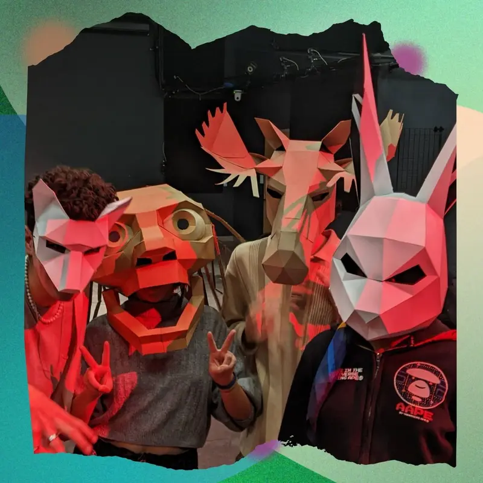
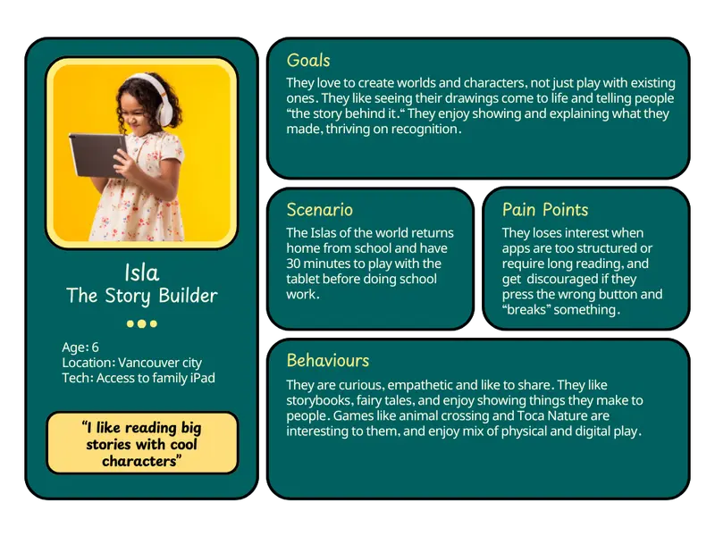
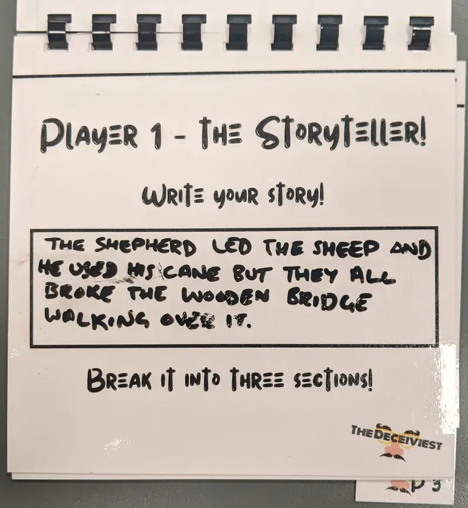
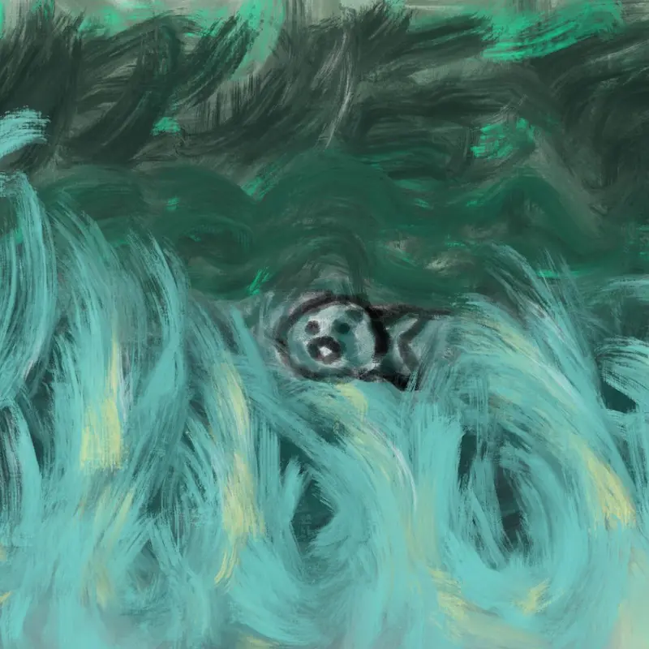
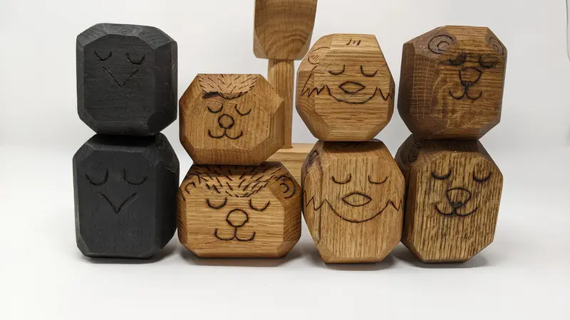
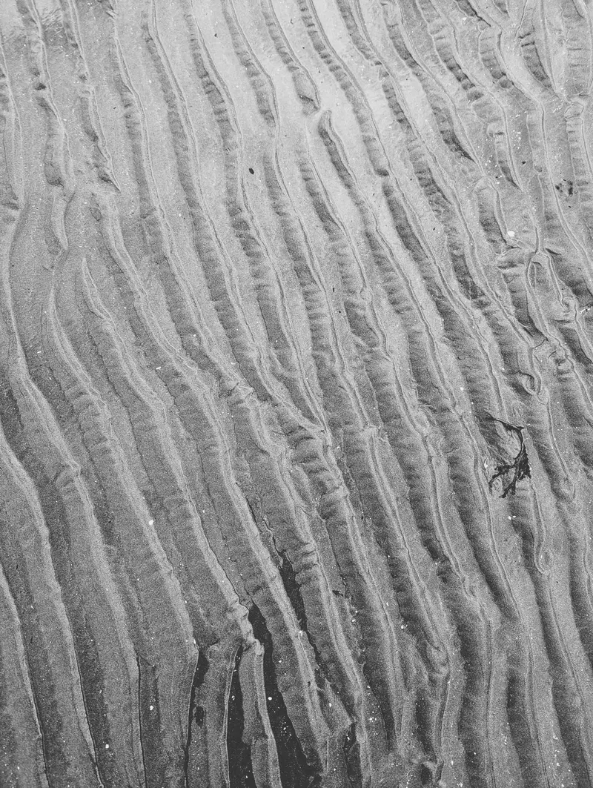

Storytelling
Interactive storytelling experiments, immersive and conceptual narrative work, story systems, prompts and world logic and writing that supports or emerges from making. Rather than fixed narratives, these are conditions for stories to unfold.
Showing: All stories

Embodied Storyboarding →
An afternoon of movement, mask work, puppetry and music before seven minutes of storyboarding, for ECUAD animation students.

Tall Tales Storytelling App →
A story-making iPad app for children ages 5 to 7. Kids draw the characters, scan them in and choose where the story goes.

The Deceiviest Social Game →
A five-player storytelling game about creating a story, and then trying to derail it.

Films →
Origins of Evolution, Tension and Zombie Hill: paint-on-glass, live action and paper animation.

Material practice →
Relational objects grounded in Indigenous material practice, including the Coming Home puzzle and a balancing toy for language learning.

Photography →
Photographs of the small terrains most people walk across, read as places where stories have already happened.